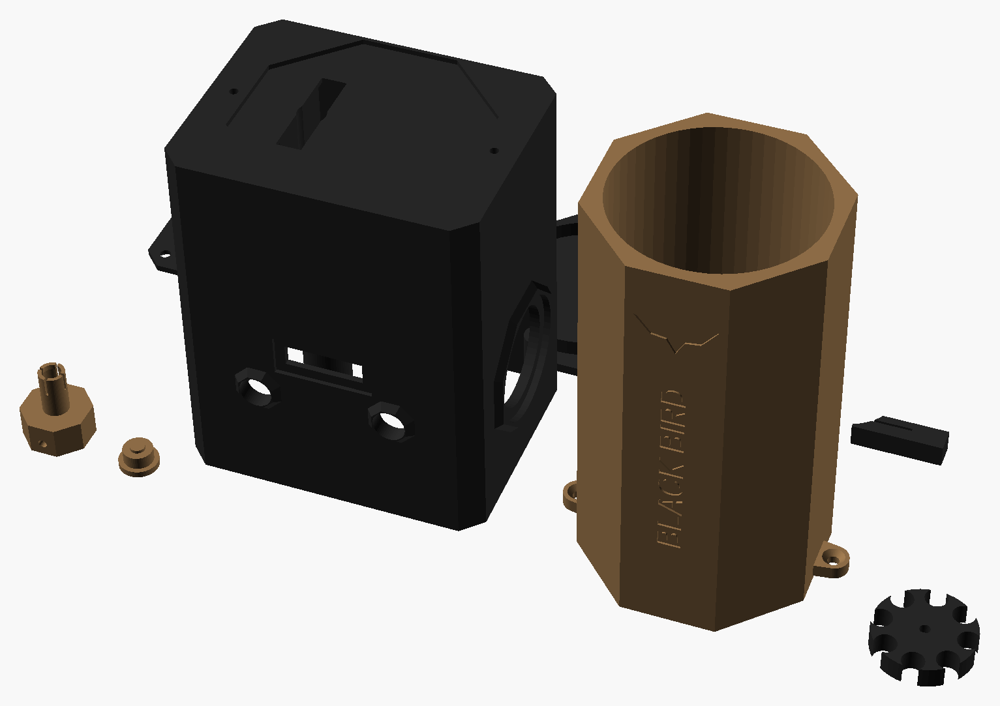
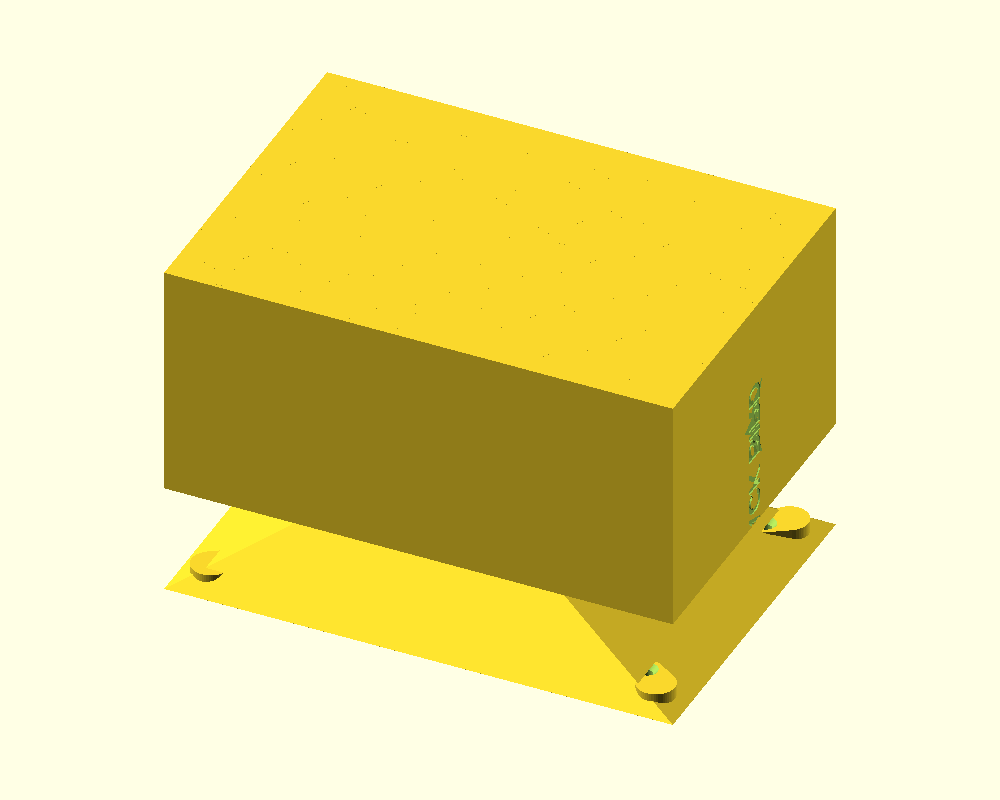

Enche o carregador sozinho: você encaixa o carregador M4 no bico, aperta o gatilho e ele para na quantidade certa (120 para mid-cap). Um sensor infravermelho conta cada BB e o motor dá ré sozinho se travar. Reaproveita os kits do cronógrafo (04). Medidas em milímetros.
Encoste um cartão de crédito/débito na tela e mova o controle até o retângulo ter exatamente o mesmo tamanho (85,6 × 54 mm).
px/mmPor que intermediário: a eletrônica é simples (motor, sensor, botões), mas a parte mecânica pede ajuste fino: a folga da roda, a altura do bico e a velocidade do motor precisam ser testadas com BBs de verdade. É uma boa sequência depois do cronógrafo, porque usa o mesmo sensor de barreira infravermelha.
| Ação | Resultado |
|---|---|
| Botões − e + | Escolhem a quantidade: 30 · 50 · 120 · 150 · 300 · CONTÍNUO. Fica salva para a próxima vez |
| Gatilho (botão arcade na lateral) | Começa a carregar e para sozinho na quantidade. Apertar no meio pausa; apertar de novo continua |
| Modo CONTÍNUO | Carrega enquanto o gatilho estiver apertado (para hi-cap ou para encher devagar) |
| BB parou de passar (travou) | Primeiro a roda agita (vai e volta curto), depois dá ré por 0,3 s e tenta de novo. Depois de 3 tentativas, para e mostra "CHEIO OU TRAVOU" |
| Carregador quase cheio | Nos últimos 20% da quantidade o motor vai a 100% de força, porque a mola do carregador empurra de volta |
| Ao ligar | Mostra o total de BBs já carregadas e chacoalha a roda 3 vezes para soltar BBs presas. Ligar segurando − chacoalha enquanto segurar (anti-travamento estendido) |
| Partida rápida | Com ele dormindo, segure o gatilho: acorda e já começa a carregar a última quantidade usada |
| Durante a carga | Tela mostra BBs carregadas, velocidade (BB/s) e tempo. No CONTÍNUO, soltar e apertar de novo continua a mesma contagem; ela zera sozinha depois de 1 min parado |
| Segurar − e + juntos | Ré manual enquanto segurar, para soltar uma BB presa |
| 3 min sem uso | Apaga e dorme; o gatilho acorda |
Todas as peças impressas deste projeto, nas cores de impressão (coyote e preto); cada peça sai de uma cor só. As tampas aparecem viradas para cima, como ficam no uso. Arquivos em 3D/stl; quantidades, suportes e configuração no 3D/LEIA-ME.txt.

| Componente | Medidas (mm) | Função |
|---|---|---|
| ESP32-C3 SuperMini (do kit de 5 do cronógrafo) | 22,5 × 18 | Controla o motor, conta as BBs e desenha a tela |
| Motor N20 6 V com redução 100 rpm | 12 × 10 × 34 | Gira a roda. A versão de 100 rpm tem mais força que a de 300 rpm |
| Módulo ponte H L9110S | ≈ 28 × 21 | Liga o motor para frente e para trás (ré para destravar) |
| Par LED IR + fototransistor + LM393 + trimpot (do kit do cronógrafo) | Ø 5 | Conta cada BB no tubo |
| OLED 0,91″ 128×32 I2C | 38 × 12 | Contagem e estado |
| Botão arcade 30 mm (sobra do kit da bomba) | furo Ø 30 | Gatilho |
| 2 botões 6×6 + chave SS12D00 | — | − , + e liga/desliga |
| Módulo carregador 18650 com saída 5 V + suporte 18650 + bateria 18650 | ≈ 30 × 25 · suporte 77 × 21 | Alimenta o motor e a placa (5 V). O suporte deita no fundo da baia, encostado na parede da frente |
Peças impressas (pasta 3D) | — | corpo, tampa de baixo, reservatório e tampa, roda, 2 meias travas da roda, bico M4, 2 capas dos botões |
Sem escala. Todos os GND juntos. O sensor IR é o mesmo circuito de uma barreira do cronógrafo (04).
RODA_R no pecas.scad.SPEEDLOADER/SPEEDLOADER.ino (bibliotecas Adafruit SSD1306 e GFX). Se a contagem não funcionar, troque IR_NIVEL_BB de LOW para HIGH.INVERTER_MOTOR para true; nada acontece no gatilho → confira os fios do botão no GPIO4 e GND; contagem errada → ajuste o trimpot do LM393.Preços pesquisados em out/2026 no Mercado Livre, sem frete. Só produtos novos: os links do Mercado Livre já abrem com o filtro "Novo". Peças impressas não entram. "Kits do 04" = cronógrafo; "kit da bomba" = 01.
| Item | Onde | Fica para | Menor | Maior |
|---|---|---|---|---|
| Motor N20 6 V com redução 100 rpm (o kit com 2 sai R$ 62–107) | Mercado Livre · exemplo | — | R$ 39,00 | R$ 54,00 |
| Módulo ponte H L9110S (o kit com 2 sai R$ 23,80) | Mercado Livre | — | R$ 13,97 | R$ 27,03 |
| OLED 0,91″ 128×32 I2C | Mercado Livre | — | R$ 14,90 | R$ 26,90 |
| Módulo carregador 18650 com saída 5 V (plaquinha, estimativa) | Mercado Livre | — | R$ 15,00 | R$ 25,00 |
| Suporte 18650 com fios (estimativa) | Mercado Livre | — | R$ 5,00 | R$ 10,00 |
| ESP32-C3, par IR, LM393, trimpot, botões 6×6, chave, 18650 | kits do 04 | — | R$ 0,00 | R$ 0,00 |
| Botão arcade 30 mm, resistores | sobras do kit da bomba (01) | — | R$ 0,00 | R$ 0,00 |
| Total reaproveitando os kits do 01 e do 04 | ≈ R$ 88 | ≈ R$ 143 | ||
| Total do zero (comprando também os kits de C3, IR, LM393, 18650, arcade, botões e chaves) | ≈ R$ 314 | ≈ R$ 442 | ||
Mesmo mecanismo, reservatório maior: corpo_comercial aceita reservatório retangular 160×110×110 mm com funil interno 35 mm + nervuras 8 mm anti-empenamento. 100% das peças do mecanismo (roda, travas, motor, bico, sensor, eletrônica) são compartilhadas com a versão padrão. Imprime deitado na K1C (220×220).
O funcionamento é idêntico à versão padrão: botões −/+, gatilho, modo contínuo, anti-travamento ativo (agita + ré + retry 3×), força final nos últimos 20%, contador vitalício, partida rápida, sleep/wake por gatilho. A única diferença é a capacidade do reservatório — você recarrega 50+ mid-caps sem reabastecer.
pecas_comercial.scad)Peças novas/exclusivas da versão comercial (em coyote para destaque). As demais (roda, travas, motor, bico, capas, corpo base) são idênticas à versão padrão.

| Peça | Qtd | Cor | Tempo Est. | Suporte | Observação |
|---|---|---|---|---|---|
| corpo_comercial | 1 | Preto | ~8 h | Não | Suporta reservatório retangular (4 pontos fixação cantos) |
| reservatorio_comercial | 1 | Coyote | ~12–15 h | Não | 160×110×110 mm, funil 35mm, nervuras 8mm, deitado na K1C |
| tampa_reservatorio_comercial | 1 | Preto | ~2 h | Não | Retangular, aba vedação interna, nervuras V topo |
| tampa_inferior | 1 | Preto | ~1 h | Não | Igual padrão |
| roda | 1 | Preto | ~2 h | Não | Igual padrão (camada 0,1 mm, ironing ON) |
| trava_roda | 2 | Preto | ~30 min | Não | Igual padrão |
| trava_motor | 1 | Preto | ~30 min | Não | Igual padrão |
| bico_m4 | 1 | Coyote | ~1 h | Não | Igual padrão |
| capa_botao | 2 | Coyote | ~20 min | Não | Igual padrão |
3D/pecas_comercial.scad — selecione a peça em PECA (F6 render, F7 export STL). Variáveis de ajuste: RES_BOX_W=160, RES_BOX_D=110, RES_BOX_H=110, RES_WALL=4, RES_RIB=8.| Componente | Medidas (mm) | Função | Mudança vs Padrão |
|---|---|---|---|
| ESP32-C3 SuperMini | 22,5 × 18 | Controla motor, conta BBs, tela | Igual |
| Motor N20 6 V 100 rpm | 12 × 10 × 34 | Gira a roda | Igual (opcional: 50 rpm p/ mais força) |
| L9110S | ≈ 28 × 21 | Ponte H motor | Igual |
| Sensor IR + LM393 (kit 04) | Ø 5 | Conta BBs no tubo | Igual |
| OLED 0,91″ 128×32 I2C | 38 × 12 | Contagem e estado | Igual |
| Botão arcade 30 mm (kit 01) | furo Ø 30 | Gatilho | Igual |
| 2 botões 6×6 + chave SS12D00 | — | −, +, liga/desliga | Igual |
| Carregador 18650 5V + suporte + bateria | ≈ 30 × 25 | Alimentação | Igual |
| Peças impressas comerciais | — | corpo_comercial, reservatorio_comercial, tampa_reservatorio_comercial | NOVAS (substituem 3 peças padrão) |
| Peças mecanismo compartilhadas | — | roda, 2× trava_roda, trava_motor, bico_m4, 2× capa_botao | Igual padrão |
A eletrônica não muda. Use o mesmo diagrama da versão padrão (seção 06 da aba Padrão).
corpo_comercial, reservatorio_comercial (deitado, 12–15h, brim 10mm, cola bastão bordas longas), tampa_reservatorio_comercial. Imprima também roda, travas, corpo padrão (para testar mecanismo antes).SPEEDLOADER/SPEEDLOADER.ino. Nenhuma mudança no firmware.Preços out/2026 ML (filtro Novo). Custo incremental sobre a versão padrão (eletrônica e mecanismo compartilhados).
| Item | Detalhamento | Menor | Maior | |
|---|---|---|---|---|
| Custo base padrão (reaproveitando kits 01+04) | Eletrônica + mecanismo + reservatório padrão | R$ 88 | R$ 143 | |
| Filamento PETG extra (reservatório 160×110×110 + tampa ~350g) | ~R$ 90/kg | R$ 31,50 | R$ 31,50 | |
| 2 parafusos M3×12 extras (4 cantos vs 2 centrais) | Pacote 50 un. | R$ 0,50 | R$ 1,00 | |
| Tempo máquina extra (12–15h vs 4h reservatório padrão) | Energia + desgaste bico/mesa (estimado) | R$ 5,00 | R$ 10,00 | |
| Total Comercial reaproveitando kits 01+04 | ≈ R$ 125 | ≈ R$ 186 | ||
| Total Comercial do zero (comprando tudo) | ≈ R$ 351 | ≈ R$ 485 | ||
| Cenário | Custo (reaproveitando) | Preço sugerido | Margem | Público |
|---|---|---|---|---|
| Kit DIY Comercial | R$ 125–186 | R$ 280–380 | 2,2–3,0× | Makers com impressora, teams |
| Kit Upgrade Padrão→Comercial | R$ 37–43 | R$ 120–180 | 3,2–4,9× | Donos da versão padrão |
| Aparelho Montado Comercial | R$ 160–230 | R$ 500–650 | 2,2–2,8× | Campos, lojas, eventos, teams |
| Aluguel mensal (Speedloader as a Service) | R$ 20–30/mês (manutenção) | R$ 150–300/mês | 5–10×/mês | Campos, lojas (recorrente) |
| Especificação | Padrão | Comercial |
|---|---|---|
| Reservatório | Octogonal 67,2 mm face-a-face × 125 mm | Retangular 160 × 110 × 110 mm |
| Volume útil | ~0,6 L | ~1,9 L |
| Capacidade BBs | ~1.000 | ~7.500–10.000 (com agitação roda) |
| Altura total aparelho | 235 mm | 335 mm |
| Fixação reservatório | 2 parafusos centrais M3×12 | 4 parafusos cantos M3×12 |
| Tampa reservatório | Octogonal encaixe fricção | Retangular aba vedação + nervuras V |
| Tempo impressão reservatório | ~4 h | ~12–15 h (deitado K1C) |
| Preenchimento reservatório | 40% giroide | 30% giroide (paredes 4mm já rígidas) |
| Nervuras internas | Não | Grade 8 mm anti-empenamento |
| Funil interno | Cônico (integrado octogonal) | Retangular 35 mm altura |
| Peças mecanismo | 100% compartilhadas (roda, travas, motor, bico, sensor, eletrônica, capas) | |
| Arquivo SCAD | pecas.scad | pecas_comercial.scad |
| Kit upgrade | — | reservatorio_comercial + tampa_reservatorio_comercial + corpo_comercial + 2× M3×12 |
RES_BOX_H para 130 mm (total aparelho 355 mm) ou RES_BOX_W para 180 mm (precisa dividir em 2 partes ou cama 300 mm).Analisei o guia de montagem e o guia do usuário do Nano Speedloader (ProtoForge), os dois PDFs que estão nesta pasta. Ele também usa ESP32 programado na IDE do Arduino, então as ideias encaixam bem no nosso.
| Ideia do Nano | No nosso projeto |
|---|---|
| Roda agitadora acima da roda de alimentação, para as BBs não embolarem | Adotado de outro jeito: a entrada virou uma fenda de 16 mm ao longo da borda da roda, então a própria roda mexe as BBs que estão em cima dela. Além disso, o código agita a roda antes de dar ré quando trava. Sem engrenagem extra, mais simples de montar. |
| Botão anti-pinçamento com mola: evita BB presa entre a roda e a parede | Adotado: as travas da roda têm um lábio flexível impresso (uma fenda solta a ponta), que cede em vez de quebrar a BB ou a roda. Não precisa da mola de caneta. |
| Cano com saída estreitada, para as BBs não caírem sem carregador | Adotado: a ponta do bico estreita para 5,7 mm e tem 4 dedos flexíveis. |
| Chacoalhar ao ligar + segurar uma seta para chacoalhar mais | Adotado no código (segurar − ao ligar). |
| Partida pelo gatilho com o aparelho desligado | Adotado (partida rápida). |
| Contagem e tempo zeram depois de 1 min; tela com BB/s e duração | Adotado. |
| Contador global que não zera | Adotado: aparece ao ligar. |
| Motor força mais com o carregador quase cheio | Adotado: força total nos últimos 20%. |
| Direção do motor ajustável (problema comum) | Adotado: INVERTER_MOTOR no código. |
| Amaciamento e teste de contagem | Adotado na montagem passo a passo. |
| Impressão: roda e mecanismo com camada fina (0,1 mm), 4+ paredes, 50% de preenchimento, "passar a ferro" (ironing) | Adotado no LEIA-ME da pasta 3D. |
| Contagem por microswitch empurrado por cada BB | Não adotado: o nosso sensor infravermelho não gasta (o microswitch tem uma peça que desgasta) e usa as peças que já sobram do cronógrafo. |
| Servo convertido em motor + bateria LiPo 2S 7,4 V + regulador + driver DRV8833 | Não adotado: o motor N20 com redução, a 18650 com módulo de 5 V e o L9110S fazem o mesmo trabalho com peças mais baratas e com menos solda. Se o N20 ficar fraco no fim da carga, a troca recomendada é o N20 de 50 rpm (mais força). |
| Placa TTGO com tela colorida, 19 presets com ícones, 6 idiomas, atualização por Wi-Fi | Não adotado agora: seria muito mais código e uma placa mais cara. A OLED com 6 quantidades atende ao jogo. |
| Tampa com tubo de descarga e rosca para garrafa de 3300 BBs | Fica para depois, como melhoria opcional. |
RODA_R em 0,2 mm) e fique com a que passar as BBs sem prender.